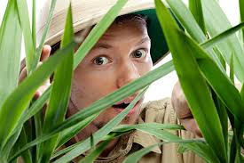

About Lucky
Lucky Shrub is a designer and storyteller inspired by shrubs, trees, and everyday landscapes. Projects combine sustainability with creativity, offering unique perspectives on design.

Lucky Shrub is a designer and storyteller inspired by shrubs, trees, and everyday landscapes. Projects combine sustainability with creativity, offering unique perspectives on design.
Explore Lucy’s latest projects, featured articles on nature and design, and insights into her creative process.

From eco-friendly designs to storytelling workshops, Lucky Shrub highlights the importance of creativity in building a sustainable future.